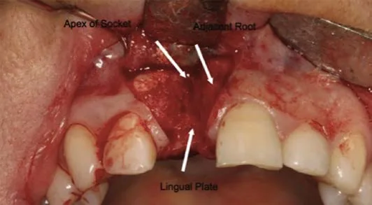
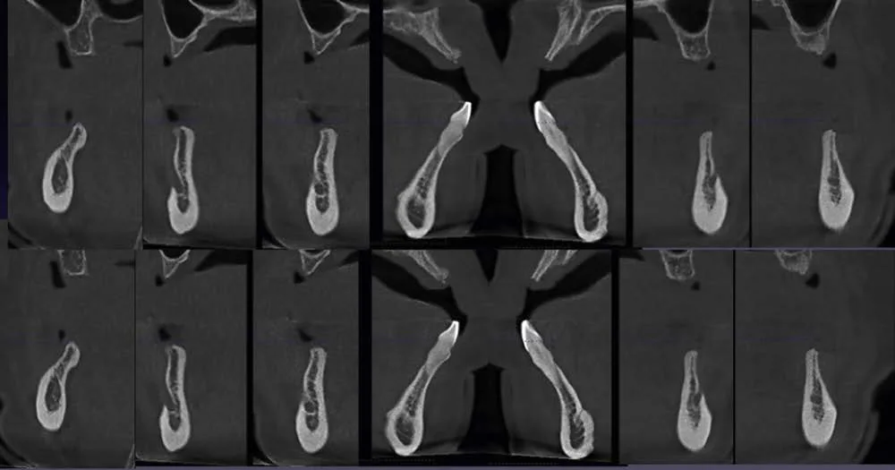

نسخه استخراجشده؛ ترجمه یا تأیید علمی انجام نشده است. وضعیت: captured
پیش از هر تصمیمی دربارهی ماده و ممبران، باید شکل نقص را نامگذاری کنی. هفت دسته وجود دارد:
۱. فرورفتگی (Depression) ۲. تقعّر (Concavity) ۳. ناودان (Trough) ۴. برجستگی (Elevation/Prominence) ۵. نقص ارتفاعی/عمودی ۶. تخریب کورتیکال باکال و لینگوال ۷. پیچیده/چندبعدی
و یک عدد مرزی این دستهها را از هم جدا میکند:
• فرورفتگی ساده = نقص افقی کمتر از ۳ میلیمتر.
• تقعّر = فرورفتگی افقی در میانهی ریج که از ۳ میلیمتر عمق بیشتر است.
چرا این عدد اهمیت دارد؟ چون استخوان اتوژن معمولاً در هر نقصی که بیش از ۳ میلیمتر رشد افقی میخواهد و در تمام موارد بازسازی عمودی اندیکاسیون دارد — و در گرافتهای بزرگ، دستکم ۵۰ درصد حجم پیوند باید اتوژن باشد.
پس «۳ میلیمتر» فقط یک اندازه نیست؛ خط تغییر استراتژی است. زیر آن، آلوگرفت بهتنهایی میتواند کافی باشد؛ بالای آن، بدون اتوژن، تراکم نهایی گرافت، مقاومتش در برابر ریمودلینگ غیرقابلپیشبینی و توان ساخت حجم عمودی تغییر میکند.
شکل نقص فقط عمق نیست: دیوارههای استخوانی باقیمانده هم ذرات را مهار میکنند و هم تکیهگاه ممبراناند، پس تخریب هر دو پلیت کورتیکال کار را بسیار دشوارتر میکند؛ و یک فرورفتگی یا تقعّر افقی وقتی کنار یک برجستگی کورتیکال باشد، پیچیدهتر میشود.
و یک هشدار دربارهی موارد پیچیده: تا وقتی درمانگر در هر یک از حالتهای پایه تجربهی گسترده پیدا نکرده، باید از موارد پیچیده/چندبعدی پرهیز کند.

پرسش درست این نیست که «چقدر استخوان کم است؟»، بلکه این است که طرح ترمیمی چقدر استخوان میخواهد؟ مسیر درست برعکس چیده میشود: اول واکسآپ دقیق و موقعیت هر ترمیم، بعد موقعیت ایمپلنتها، و در آخر مقدار استخوانی که باید ساخته شود.
چرا این ترتیب؟ چون اگر برعکس عمل کنی، ایمپلنت را جایی میگذاری که استخوان هست — و ترمیمکننده را با تاجی در موقعیت نادرست تنها میگذاری. پیش از پیدایش تکنیکهای مؤثر پیوند، کار همین بود.
گاهی راه سادهتری هم هست: اگر طرح ترمیمی موقعیت خاصی را الزام نکند — مثلاً در ناحیهی سانترال ماگزیلا که فورامن اینسیزیو به محل ایمپلنت نزدیک است — کمی جابهجایی ایمپلنت به سمت دیستال گاهی نیاز به افزایش استخوان بزرگ را برطرف میکند. اما گذاشتن ایمپلنت باریکتر یا کمتر از نیاز بهجای پیوند، مصالحه است و اغلب به شکستهای نیرومحور میانجامد.
اعداد ماندگار این درس:
• پس از کشیدن دندان، تحلیل استخوان طی ۶ ماه حدود ۱٫۵ تا ۲ میلیمتر عمودی و ۳٫۸ میلیمتر افقی است.
• هدف، قرار گرفتن ترمیم در میانهی نوار بافت کراتینیزهی چسبندهای است که دستکم ۳ میلیمتر ضخامت داشته باشد؛ ایمپلنتهایی با ضخامت بافت کمتر از ۳ میلیمتر مستعد از دست رفتن استخوان کرستال نشان داده شدهاند.
• مروری بر ۱۰۸ مقاله نشان داد: میانگین افزایش با پیوند ذرهای و ممبران ۲٫۶ میلیمتر بوده و ۲۴٫۴ درصد موارد به پیوند مجدد نیاز پیدا کردهاند.
این عدد آخر را جدی بگیر: یک نفر از هر چهار مورد. به همین دلیل توصیه میشود ریج را بیش از حد لازم بساز، نه کمتر (over-develop، نه under-develop).
بایوتایپ را زودتر از جراحی تعیین کن. بایوتایپ نازک مستعد رسِس است و بازسازی پاپیلای آسیبدیده هنوز از دشوارترین کارهای جراحی بافت نرم است. اگر بافت چسبنده کافی نیست، پیوند بافت نرم را پیش از افزایش استخوان، یا بهعنوان بخشی از پروتکل، یا پس از کاشت برنامهریزی کن.
همین طرحریزی زودهنگام فرصت میدهد بیمار را پیش از شروع درمان از طولانیتر شدن مسیر، ناراحتیهای دورهی پیوند و عوارض زیبایی احتمالی آگاه کنی.
